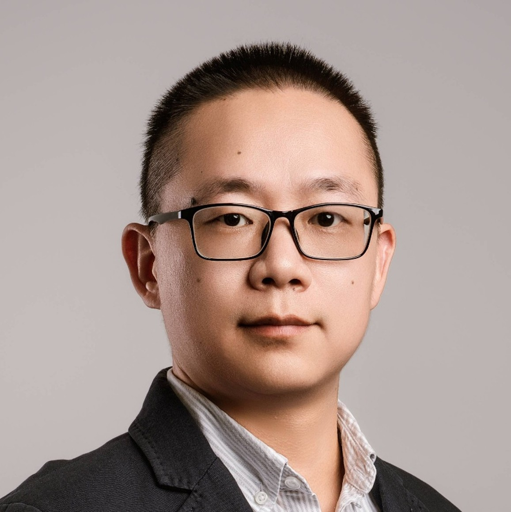
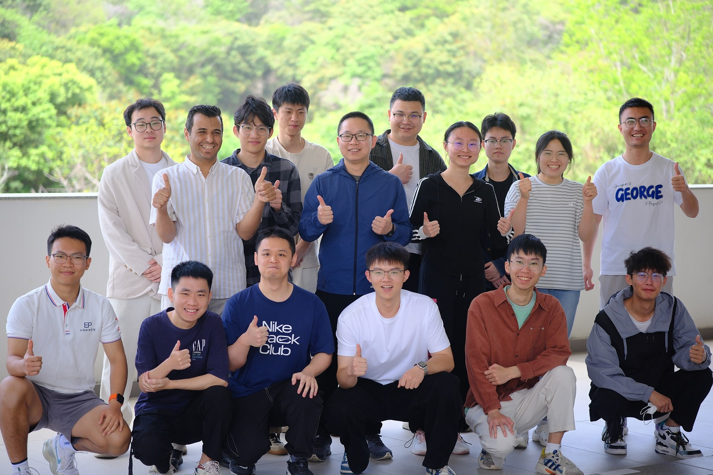

Dr. Wei Chen / 陈威 博士
Dr.rer.nat. at TUM / 毕业于慕尼黑工业大学（德国）物理系
Associate Professor (tenured) / 长聘副教授
College of Engineering Physics / 工程物理学院
Shenzhen Technology University (SZTU) / 深圳技术大学
E-mail: chenwei@sztu.edu.cn

[1] Nano & Angstrom leveled structure characterizations via grazing-incidence X-ray scattering (GIXS) and structure modelings of thin films of colloidal quantum dots (CQDs), polymers, perovskites [Natural Science Foundation of Top Talent of SZTU, No. GDRC202340, 2024-2026]
[2] Structural disorder correlated charge carrier dynamics in CQD solid films [Guangdong Basic and Applied Basic Research Foundation, No.2021A1515110535, 2021-2024]
[3] Degradation mechanism of solution-processed semiconductor thin films via GIXS [National Natural Science Foundation of China (NSFC), No.12204318, 2023-2025]
[4] Nanocrystal thin film and IC integrations towards high resolution (< 2 um) imaging technique [Shenzhen Science and Technology Program, No. RCYX20221008092908030, 2023-2025]
[5] Noval CQD optoelectronic application development [2022-2024]

Dr. Wei Chen is a tenured Associate Professor at Shenzhen Technology University (SZTU) and leads the Energy & Photonics Lab (EPL). He holds a B.Sc. in Physics from Hubei Engineering University, an M.Sc. in Materials Science from Hubei University, and a Ph.D. (Dr.rer.nat.) from the Technical University of Munich (TUM), Germany.
Dr. Chen's research focuses on solution-processed semiconductor thin films, including colloidal quantum dots (CQDs), perovskites, and organic semiconductors, with applications in optoelectronics and photodetectors. His work combines materials synthesis, thin-film processing, and advanced structural characterization techniques such as grazing-incidence X-ray scattering (GIXS). He has developed extensive collaborations across academia and industry to promote the development of next-generation optoelectronic devices.
Before joining SZTU in 2022, Dr. Chen conducted research at the Southern University of Science and Technology (SUSTech), where he worked on CQD-based optoelectronic applications. In recognition of his contributions, he was promoted to Associate Professor in 2024.
At SZTU, Dr. Chen teaches undergraduate courses in solid-state physics and semiconductor physics. He actively mentors students and welcomes those interested in materials science and photonic technologies to engage with the EPL.

[2025/04] We took a group picture for the new semester after group seminar talk.
[2025/03] Qian and Yihan presented their works on 4th Flexible Electronic Materials and Smart Sensers Conference in SYSU, Shenzhen.
[2024/11] Wei presented the work about the surface reconstruction of PbS QDs for SWIR PD at the ODE 2024 Shenzhen conference QD seminar.
[2024/10] Haibo Zhu (left), and Simin Chen (right) participated in the poster seminar of China QD 2024, Hangzhou
[2024/10] Wei joined the Sino-German Workshop and gave a plenary talk in Hangzhou